Data Collection and Cleaning
This section outlines where and how data was collected and cleaned. Links to raw and cleaned datasets, along with visual representations of the data before and after cleaning, are provided.
Data Sources
The dataset for this project was obtained from Kaggle, specifically:
Kaggle provides various datasets for research and development. The dataset was downloaded using the Kaggle API, which requires authentication via a JSON token.
Using Kaggle API to Download the Dataset
The dataset was downloaded using the Kaggle API, which requires a valid API token
stored in a kaggle.json file.
The following steps were followed to download the dataset via the command line:
- Created an API key from Kaggle by navigating to Kaggle Account.
- Downloaded the `kaggle.json` API credentials.
- Placed the `kaggle.json` file in the required directory (`~/.kaggle/` for Linux/Mac or `%USERPROFILE%/.kaggle/` for Windows).
- Ran the following command in the command prompt or terminal to download the dataset:
kaggle datasets download -d sakhawat18/asteroid-datasetThis command automatically downloads the dataset as a `.zip` file, which was then extracted and used for further processing.
API Authentication
The Kaggle API requires authentication via a JSON token. Below is an example format of the `kaggle.json` file used:
{
"username": "your_kaggle_username",
"key": "your_kaggle_api_key"
}The API key should be kept secure and never shared publicly. For security reasons, it's best to store this file in the appropriate directory and set permissions to restrict unauthorized access.
Raw and Cleaned Data Comparison
Below is a sample of the raw dataset, along with missing value counts for each column.
Figure 1: A snapshot of the raw dataset, showing a few initial rows.
Missing Values in the Dataset
The table below displays the count of missing values in each column of the dataset. Columns with a large number of missing values will require special handling during data preprocessing.
| Attribute | Missing Values |
|---|---|
| id | 0 |
| spkid | 0 |
| full_name | 0 |
| pdes | 0 |
| name | 936460 |
| prefix | 958506 |
| neo | 4 |
| pha | 19921 |
| H | 6263 |
| diameter | 822315 |
| albedo | 823421 |
| diameter_sigma | 822443 |
| orbit_id | 0 |
| epoch | 0 |
| epoch_mjd | 0 |
| epoch_cal | 0 |
| equinox | 0 |
| e | 0 |
| a | 0 |
| q | 0 |
| i | 0 |
| om | 0 |
| w | 0 |
| ma | 1 |
| ad | 4 |
| n | 0 |
| tp | 0 |
| tp_cal | 0 |
| per | 4 |
| per_y | 1 |
| moid | 19921 |
| moid_ld | 127 |
| sigma_e | 19922 |
| sigma_a | 19922 |
| sigma_q | 19922 |
| sigma_i | 19922 |
| sigma_om | 19922 |
| sigma_w | 19922 |
| sigma_ma | 19922 |
| sigma_ad | 19926 |
| sigma_n | 19922 |
| sigma_tp | 19922 |
| sigma_per | 19926 |
| class | 0 |
| rms | 2 |
The dataset contains significant missing values in the name, prefix, diameter, albedo and several sigma columns. Handling these missing values is a critical step in data cleaning.
Dropped Columns and Justification
Certain columns were removed from the dataset as they were deemed unnecessary for the analysis. The table below outlines the columns that were dropped along with the justification for their removal.
| Dropped Column | Reason for Removal |
|---|---|
id |
The id column contains alphanumeric values, whereas spkid provides a unique numeric identifier for each asteroid.
Since spkid is sufficient, id was dropped.
|
pdes |
The pdes column is a split value from full_name, making it redundant.
Since full_name was already removed, pdes is unnecessary.
|
name |
The name column is extracted from full_name. As full_name was removed, this column
does not contribute additional useful information for the analysis.
|
prefix |
The prefix column contains only a single repeated value across all rows, making it uninformative.
|
equinox |
The equinox column has only one unique value throughout the dataset, making it irrelevant for analysis.
|
Renamed Columns and Attribute Descriptions
To enhance the readability and usability of the dataset, the column names have been renamed. The table below provides the original names, their new readable names, and descriptions of each attribute.
| Original Name | New Readable Name | Description |
|---|---|---|
| spkid | asteroid_id | Unique identifier for the asteroid |
| full_name | asteroid_name | Full name/designation of the asteroid |
| neo | near_earth_object | Flag if it's a Near-Earth Object (NEO) |
| pha | potentially_hazardous | Flag if it's a Potentially Hazardous Asteroid (PHA) |
| H | absolute_magnitude | Brightness of the asteroid (lower = brighter) |
| diameter | diameter_km | Estimated diameter in kilometers |
| albedo | surface_reflectivity | Albedo - surface brightness/reflectivity |
| diameter_sigma | diameter_uncertainty_km | Uncertainty in diameter estimation |
| orbit_id | orbit_solution_id | Orbit solution reference ID |
| epoch | orbit_epoch | Epoch (timestamp) of orbital parameters |
| epoch_mjd | orbit_epoch_mjd | Epoch in Modified Julian Date format |
| epoch_cal | orbit_epoch_calendar | Epoch in calendar date format |
| e | orbital_eccentricity | How elongated the orbit is (0 = circular, 1 = parabolic) |
| a | semi_major_axis_au | Average distance from the Sun (in Astronomical Units) |
| q | perihelion_distance_au | Closest distance to the Sun (in AU) |
| i | orbital_inclination_deg | Tilt of the orbit relative to Earth's plane (in degrees) |
| om | longitude_ascending_node_deg | Longitude of ascending node (where orbit crosses Earth's plane) |
| w | argument_perihelion_deg | Orientation of the perihelion (closest point to Sun) |
| ma | mean_anomaly_deg | Position of the asteroid in its orbit (in degrees) |
| ad | aphelion_distance_au | Farthest distance from the Sun (in AU) |
| n | mean_motion_deg_day | Orbital speed (degrees per day) |
| tp | time_perihelion_passage | Time when asteroid reaches perihelion |
| tp_cal | time_perihelion_calendar | Perihelion passage in calendar format |
| per | orbital_period_days | Time taken to complete one orbit (in days) |
| per_y | orbital_period_years | Time taken to complete one orbit (in years) |
| moid | earth_moid_au | Minimum Orbit Intersection Distance with Earth (in AU) |
| moid_ld | earth_moid_ld | Earth MOID in Lunar Distances (1 LD = Earth-Moon distance) |
| sigma_e | uncertainty_eccentricity | Uncertainty in orbital eccentricity |
| sigma_a | uncertainty_semi_major_axis | Uncertainty in semi-major axis |
| sigma_q | uncertainty_perihelion_distance | Uncertainty in perihelion distance |
| sigma_i | uncertainty_orbital_inclination | Uncertainty in orbital inclination |
| sigma_om | uncertainty_longitude_ascending_node | Uncertainty in longitude of ascending node |
| sigma_w | uncertainty_argument_perihelion | Uncertainty in argument of perihelion |
| sigma_ma | uncertainty_mean_anomaly | Uncertainty in mean anomaly |
| sigma_ad | uncertainty_aphelion_distance | Uncertainty in aphelion distance |
| sigma_n | uncertainty_mean_motion | Uncertainty in mean motion |
| sigma_tp | uncertainty_time_perihelion_passage | Uncertainty in time of perihelion passage |
| sigma_per | uncertainty_orbital_period | Uncertainty in orbital period |
| class | asteroid_class | Classification of asteroid (Apollo, Amor, etc.) |
| rms | orbit_fit_rms | Root Mean Square (RMS) residual of orbit fit |
Data Cleaning and Missing Value Handling
The dataset underwent several cleaning steps to handle missing values and improve data quality. Various imputation techniques, including median replacement and regression-based imputation, were used.
1. Filling Missing Values Using Median Imputation
Missing values in key numerical columns such as absolute_magnitude,
orbit_fit_rms, orbital_period_days, orbital_period_years,
mean_anomaly_deg, and earth_moid_au were replaced with their respective median values.
# Filling missing values using median imputation
data[["absolute_magnitude", "orbit_fit_rms", "orbital_period_days",
"orbital_period_years", "mean_anomaly_deg", "earth_moid_au"]] =
data[["absolute_magnitude", "orbit_fit_rms", "orbital_period_days",
"orbital_period_years", "mean_anomaly_deg", "earth_moid_au"]].fillna(
data[["absolute_magnitude", "orbit_fit_rms", "orbital_period_days",
"orbital_period_years", "mean_anomaly_deg", "earth_moid_au"]].median())
2. Predictive Imputation for Diameter and Surface Reflectivity
Since the diameter_km, surface_reflectivity, and diameter_uncertainty_km
attributes had missing values, a regression-based imputation was applied.
A **Linear Regression model** was trained on available data to predict missing values using features such as
absolute_magnitude, semi_major_axis_au, and perihelion_distance_au.
from sklearn.linear_model import LinearRegression
# Selecting relevant features for predicting 'diameter'
features = ['absolute_magnitude', 'semi_major_axis_au', 'perihelion_distance_au',
'orbital_eccentricity', 'orbital_inclination_deg', 'earth_moid_au']
# Splitting dataset into training (non-missing values) and missing (to be predicted)
df_train = data[data['diameter_km'].notnull()]
df_missing = data[data['diameter_km'].isnull()]
# Train a Linear Regression model
model = LinearRegression()
model.fit(df_train[features], df_train['diameter_km'])
# Predict missing values
data.loc[data['diameter_km'].isnull(), 'diameter_km'] = model.predict(df_missing[features])
3. Filling Missing Values for Earth MOID and Aphelion Distance
Missing values in earth_moid_ld were filled using their median value.
This ensures that crucial parameters for asteroid impact risk remain consistent.
# Filling missing values in 'earth_moid_ld' using median
data[["earth_moid_ld"]] = data[["earth_moid_ld"]].fillna(data[["earth_moid_ld"]].median())
4. Predictive Imputation for Uncertainty Attributes
Several **uncertainty-related attributes** (such as uncertainty_eccentricity,
uncertainty_semi_major_axis, and uncertainty_perihelion_distance) had missing values.
These were imputed using **Linear Regression models**, where missing values were predicted based on related orbital parameters.
from sklearn.linear_model import LinearRegression
# Feature selection for each uncertainty attribute
uncertainty_features = {
"uncertainty_eccentricity": ["orbital_eccentricity", "semi_major_axis_au", "perihelion_distance_au"],
"uncertainty_semi_major_axis": ["semi_major_axis_au", "orbital_period_days", "earth_moid_au"],
"uncertainty_perihelion_distance": ["perihelion_distance_au", "orbital_eccentricity", "earth_moid_au"],
"uncertainty_orbital_inclination": ["orbital_inclination_deg", "semi_major_axis_au", "orbital_period_days"],
"uncertainty_longitude_ascending_node": ["longitude_ascending_node_deg", "semi_major_axis_au", "orbital_eccentricity"],
"uncertainty_argument_perihelion": ["argument_perihelion_deg", "orbital_eccentricity", "perihelion_distance_au"],
"uncertainty_mean_anomaly": ["mean_anomaly_deg", "orbital_period_days", "semi_major_axis_au"],
"uncertainty_aphelion_distance": ["aphelion_distance_au", "semi_major_axis_au", "orbital_eccentricity"],
"uncertainty_mean_motion": ["mean_motion_deg_day", "orbital_period_days", "semi_major_axis_au"],
"uncertainty_time_perihelion_passage": ["time_perihelion_passage", "orbital_period_days", "semi_major_axis_au"],
"uncertainty_orbital_period": ["orbital_period_days", "semi_major_axis_au", "earth_moid_au"]
}
# Apply regression-based imputation for each uncertainty column
for col, features in uncertainty_features.items():
df_train = data[data[col].notnull()]
df_missing = data[data[col].isnull()]
if not df_missing.empty:
model = LinearRegression()
model.fit(df_train[features], df_train[col])
data.loc[data[col].isnull(), col] = model.predict(df_missing[features])
Summary of Cleaning Process
- Used **median imputation** for common numerical attributes.
- Applied **regression-based imputation** to predict missing values for
diameter_kmandsurface_reflectivity. - Replaced missing values in **earth-moid-related attributes** with their median values.
- Utilized **Linear Regression** to impute missing values for uncertainty-related attributes.
This data cleaning process ensures that missing values do not negatively impact the dataset's integrity and that essential orbital characteristics remain reliable for further analysis.
Cleaned data
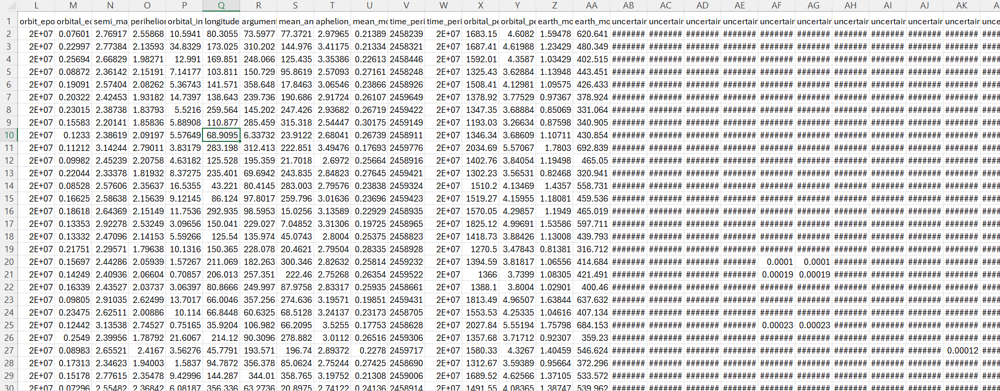Figure 2: A snapshot of the cleaned dataset after handling missing values.
Exploratory Data Analysis
Below are visualizations created during data exploration and preparation:
Key Insights from the Visualizations
The following visualizations provide important insights into asteroid properties, orbital characteristics, and potential collision risks. Each visualization highlights different aspects of asteroid behavior, distribution, and orbital mechanics.
1. Asteroid Class Distribution
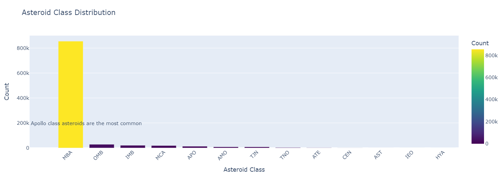Insight: The most common asteroid class is the MBA (Main Belt Asteroids), followed by Apollo, Amor, and Atens.
Implication: Most asteroids reside in the main belt, but Apollo asteroids are significant as they cross Earth's orbit, posing potential collision threats.
2️. Distribution of Orbital Inclinations
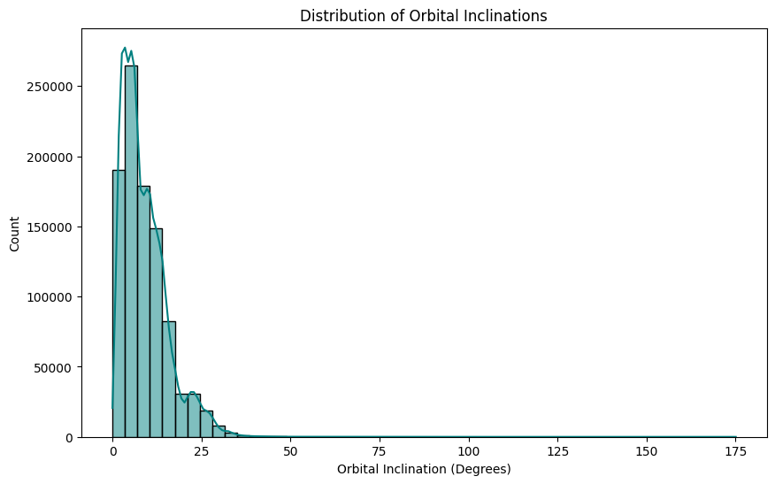Insight: Most asteroids have a low orbital inclination (less than 25 degrees), with fewer at higher inclinations.
Implication: Lower inclination asteroids have stable orbits, while higher inclination asteroids may be influenced by gravitational interactions.
3️. Distribution of Asteroid Sizes
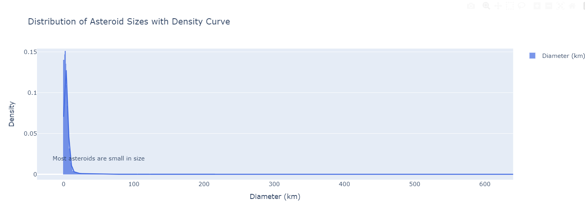Insight: Most asteroids are relatively small, with a long tail representing a few very large asteroids.
Implication: Smaller asteroids are likely fragments from larger bodies. Large asteroids are rare but more significant for impact risks.
4️. Earth MOID vs. Absolute Magnitude
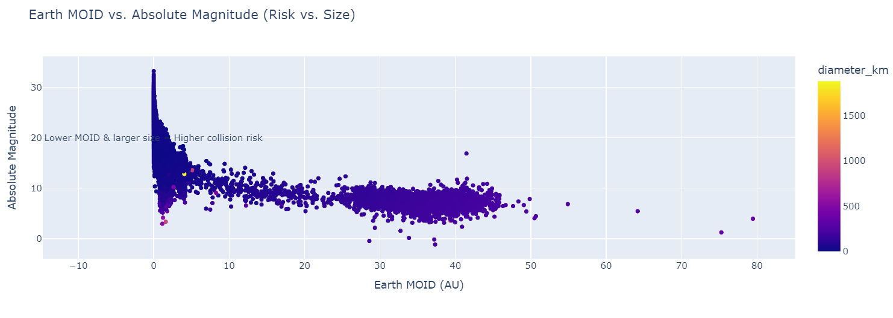Insight: A concentration of small asteroids (higher absolute magnitude) exists at very low MOID values.
Implication: Small MOID values combined with larger asteroids indicate higher collision risks, necessitating closer monitoring.
5️. Eccentricity vs. Semi-Major Axis
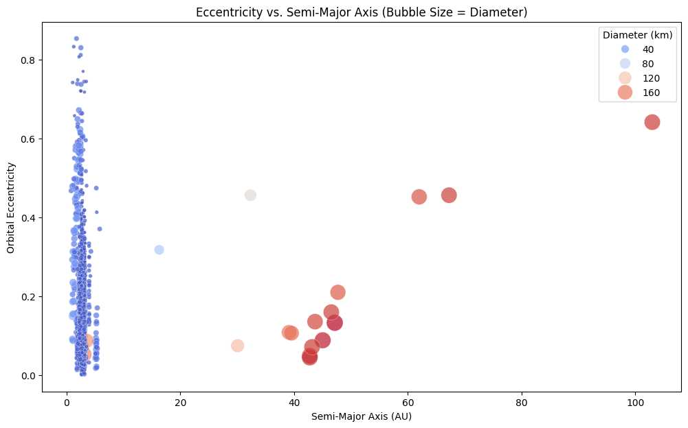Insight: Asteroids with larger semi-major axes tend to have more elliptical orbits.
Implication: High eccentricity asteroids are more dynamic and influenced by planetary gravitational interactions.
6️. Orbital Inclination by Asteroid Class
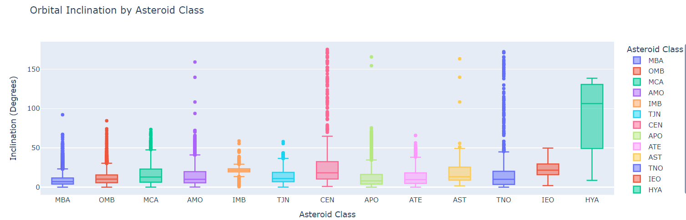Insight: Different asteroid classes exhibit varying inclinations, with some extreme outliers.
Implication: These variations indicate past interactions with celestial bodies and help refine asteroid classification models.
7️. Pairplot of Key Orbital Parameters
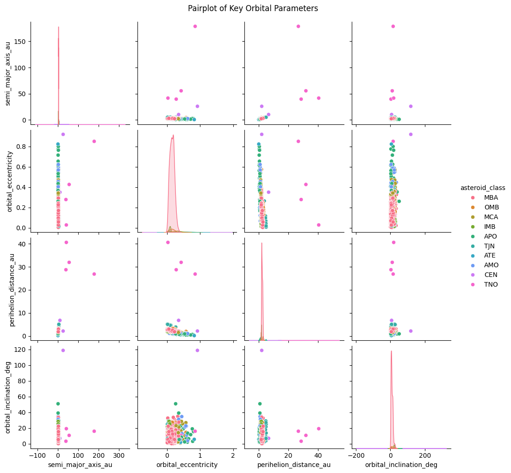Insight: There are clear relationships between semi-major axis, eccentricity, and perihelion distance.
Implication: These relationships allow us to categorize asteroids and predict potential Earth impactors.
8️. Perihelion Distance vs. Semi-Major Axis
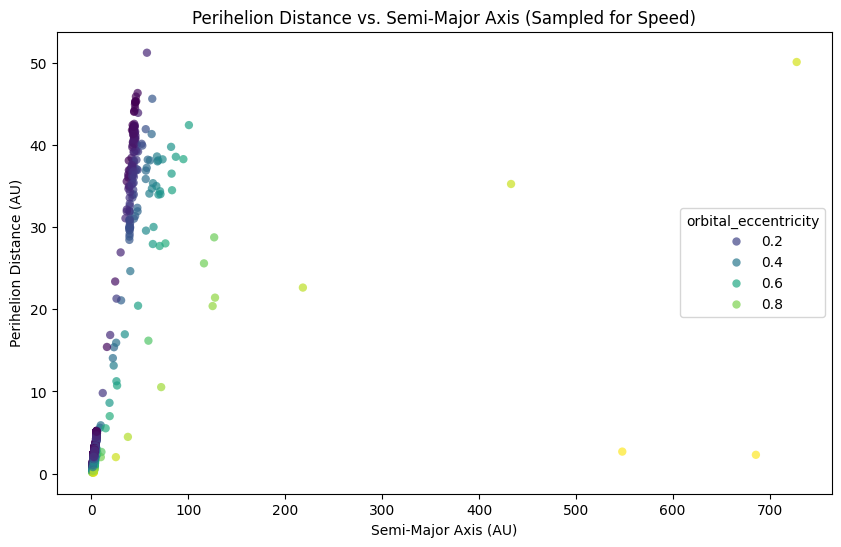Insight: Asteroids with lower perihelion distances come dangerously close to the Sun and sometimes to Earth's orbit.
Implication: Such objects require monitoring, as orbital perturbations could bring them closer to Earth over time.
9️. Violin Plot of Orbital Eccentricity by Asteroid Class
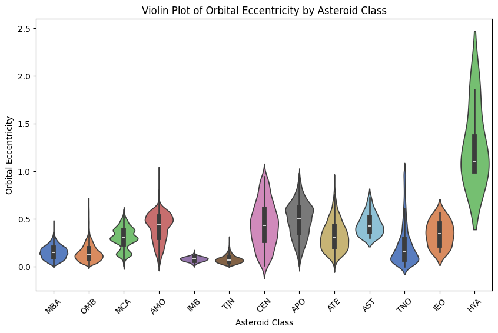Insight: Some asteroid classes exhibit significantly higher eccentricities, while others remain clustered.
Implication: Higher eccentricity means more stretched orbits, making an asteroid's trajectory harder to predict.
10. 3D Visualization of Orbital Parameters
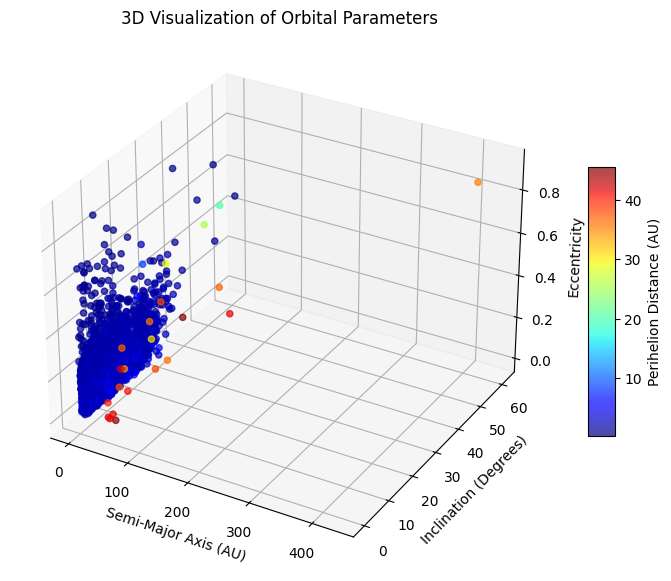Insight: There is a dense cluster of asteroids with low eccentricity and inclination, but some objects show extreme values.
Implication: Identifying outliers in 3D space helps in detecting asteroids influenced by gravitational forces or past collisions.
Summary
The data preparation and exploratory analysis highlighted trends and inconsistencies that were addressed during the cleaning process. For details on the full analysis, please refer to the linked Jupyter notebooks.